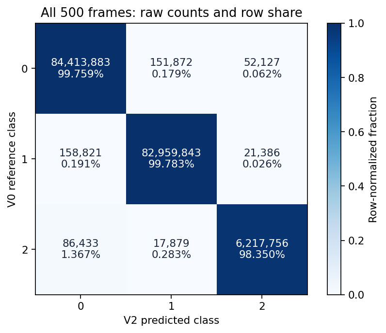
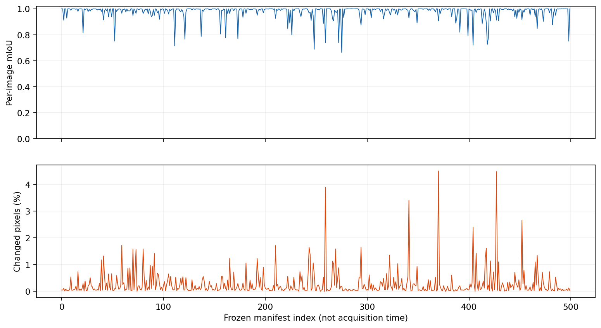
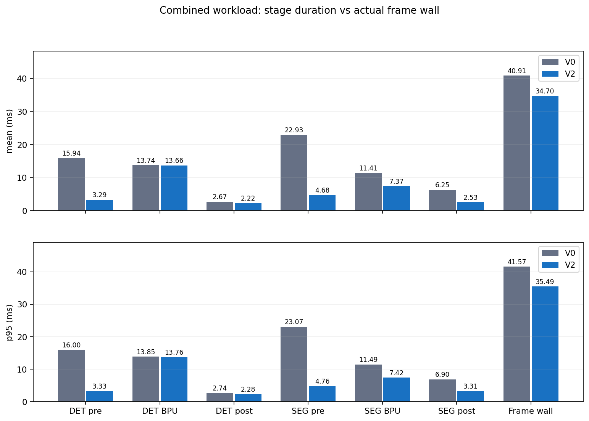
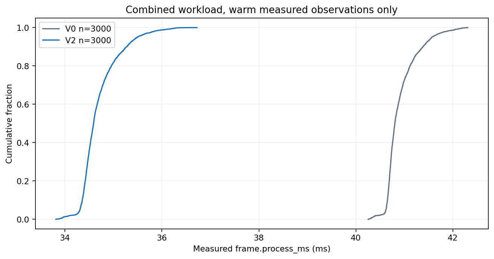
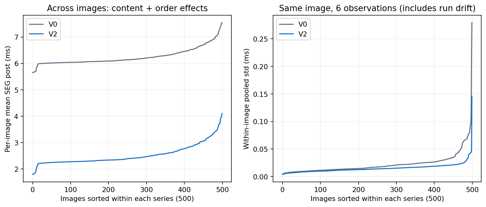
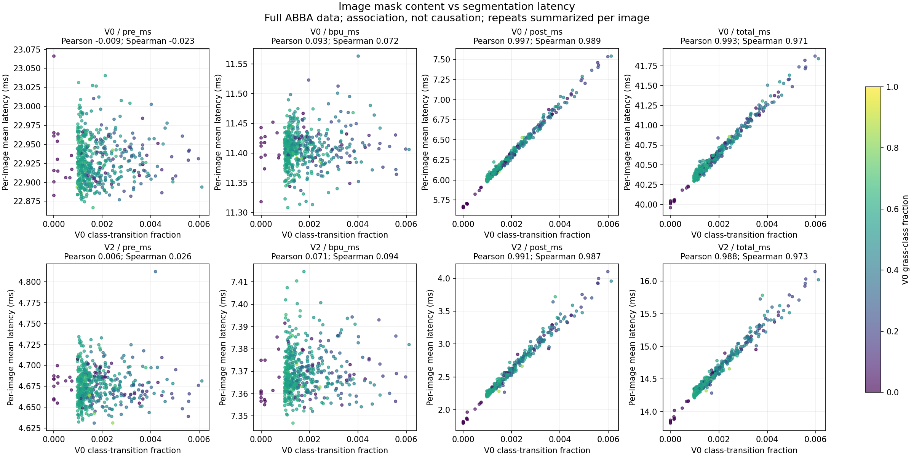

结果先看这里
两版结果接近，但没有逐位一致：分割 494/500 帧出现像素变化；检测在 IoU≥0.5 时有 2 个 V0 框和 1 个 V2 框无法一一配对。无人工标注，不能据此判定哪版更准确。
实际组合调用的整帧 DNN 平均耗时：V0 40.915 ms，V2 34.702 ms；V2 比 V0 减少 15.18%。该值包含此接口的调度和包装开销，不能用两个模型的阶段耗时相加替代。
替换时还要留意未预热首帧：本次单次观测 V0 45.410 ms，V2 1,871.223 ms。该一次性成本未混入上述预热性能，详见冷启动首帧观测。
本报告比较旧 V0 的独立检测/分割 DNN 入口与 V2 普通 full C ABI SDK；未运行完整 V0 ROS 节点，也没有测真实相机帧率。测试范围只有检测和分割。
输入、版本与实验设计
| 项目 | 本次做法 |
|---|---|
| 输入来源 | /home/st/tmpDATA/stereo_data/left_nv12 |
| 实际输入 | 500 张原始 NV12，640×544，stride=640，每张522,240字节 |
| 预处理输入 | 两版同一冻结文件清单和逐文件 SHA；没有从 JPG 二次转换、没有重采样输入 |
| 质量轮 | 每版新进程；warmup=0，repeat=1；全量检测JSON、原始class-ID掩码保存 |
| 组合性能轮 | V0 → V2 → V2 → V0（ABBA），每轮 warmup=20、repeat=3；每版3,000条测量 |
| 独立功能性能轮 | 只检测、只分割各测两版，每轮warmup=20、repeat=3；每版每项1,500条测量 |
| 预热含义 | 每个case先运行20张输入，随后完整清单重复3轮；预热记录不计入统计 |
| 模型 | mmyolo1010.bin + pidnet_1020_3classes.bin，两版模型BIN SHA完全相同 |
| 检测配置 | letterbox → 864×480；score阈值0.5，NMS阈值0.7，34类，reg_bins=16；输出映射回640×544 |
| 分割配置 | 直接resize → 832×480；3类；bilinear argmax，align_corners=true；原始标签输出640×544 |
| 配置范围 | 保持相同源图、模型尺寸、类别顺序、阈值和输出坐标域；实现是否数值相同以实际结果验证 |
| 精度口径 | 以V0预测为参考的一致性；无人工GT，不计算mAP，不宣称绝对精度优劣 |
| 顺序 | 按冻结manifest顺序重放；不是原始相机连续时间线 |
原始目录还包含左右目和 JPG 表示；检测/分割沿原流程仅使用左目。输入审查确认每个文件夹各500张、尺寸一致、左右配对完整、各文件夹无内容重复；这些完整性事实不代表场景覆盖充分。
质量轮沿用原 R5 适配器。性能轮使用本次审计过的 native FNV1a64 校验 helper，替换 V0 适配器中的逐字节 Python 校验；原生推理程序、模型和内部计时窗口未改变。helper已用独立向量及适配器检查验证；这部分外层校验不进入 frame.process_ms。
分割结果一致性
先累计全部 174,080,000 个有效像素的混淆矩阵，再对有非零 union 的类别取 IoU 均值。累计 mIoU = 98.75670%，宏 Dice = 99.37144%，像素一致率 = 99.71937%。本次三个类别均有有效支持。
| 类别ID | V0像素 | V2像素 | 交集 | 并集 | IoU | Dice | 一致性P | 一致性R |
|---|---|---|---|---|---|---|---|---|
| 0 no_grass | 84,617,882 | 84,659,137 | 84,413,883 | 84,863,136 | 99.471% | 99.735% | 99.710% | 99.759% |
| 1 grass | 83,140,050 | 83,129,594 | 82,959,843 | 83,309,801 | 99.580% | 99.790% | 99.796% | 99.783% |
| 2 flagstone | 6,322,068 | 6,291,269 | 6,217,756 | 6,395,581 | 97.220% | 98.590% | 98.832% | 98.350% |
“一致性P/R”只是把V0预测当参考时的版本对照。逐图双方都不存在的类别记为 null 并排除，不按100%补齐。累计 mIoU 与逐图 mIoU 均值口径不同，均在下表保留。
| 指标 | 均值 | p50 | p95 | 最小 | 最大 |
|---|---|---|---|---|---|
| 逐图 mIoU | 97.747% | 99.687% | 99.967% | 66.399% | 100.000% |
| 逐图变化像素 | 977.04 | 322.0 | 3,976.1 | 0 | 15,686 |
全掩码完全一致 6/500 帧；有变化 494/500 帧。全量变化像素共 488,518，占有效像素 0.28063%。


最低逐图 mIoU 为 66.399%（detseg-000275，252b_001211_org_left_260826_1335.nv12），但变化仅 668 像素，像素一致率 99.808%。其中 类别2的并集只有1像素，IoU=0.000，小类别同样占三分之一权重，拉低了逐图mIoU。应结合支持像素数和原始差异图判断。
检测结果一致性
每帧只匹配同类别框；先最大化可匹配数量，再最大化总IoU。主阈值 IoU≥0.5，补充严格阈值0.95。未匹配表示版本差异，不能直接叫漏检或误检。
| IoU阈值 | V0框 | V2框 | 匹配 | V0未匹配 | V2未匹配 | 匹配/V2 | 匹配/V0 | 匹配平均IoU |
|---|---|---|---|---|---|---|---|---|
| 0.5 | 179 | 178 | 177 | 2 | 1 | 99.438% | 98.883% | 0.991748 |
| 0.95 | 179 | 178 | 173 | 6 | 5 | 97.191% | 96.648% | 0.993287 |
| 帧级项目 | 数量 |
|---|---|
| 双方都无框 | 364 |
| V0无框、V2有框 | 1 |
| V0有框、V2无框 | 2 |
| 双方都有框 | 133 |
| 任一方有框的帧 | 136 |
| 全部帧严格一致（含空框） | 364/500 |
| 非空帧严格一致 | 0/136 |
严格一致检查无视输出顺序，要求类别、4个坐标和score全部相等（容差均为0）。本次严格一致的 364 帧全部来自双方空框；不能把它称为检测准确率 72.800%。非空帧的框/score存在数值差异。
| IoU≥0.5匹配框差异 | 均值 | p50 | p95 | p99 | 最大 |
|---|---|---|---|---|---|
| 单坐标绝对误差（像素） | 0.3827 | 0.1097 | 1.3776 | 5.4262 | 19.0714 |
| 每框最大坐标误差（像素） | 1.0873 | 0.4424 | 4.2678 | 11.4580 | 19.0714 |
| score绝对误差 | 0.010475 | 0.005905 | 0.033929 | 0.061157 | 0.084228 |
按类别展开检测框数量与匹配
| 类别ID / 名称 | V0框 | V2框 | 匹配 | V0未匹配 | V2未匹配 |
|---|---|---|---|---|---|
| 0 cobblestone | 18 | 18 | 18 | 0 | 0 |
| 2 flagstone | 16 | 16 | 16 | 0 | 0 |
| 5 flower | 11 | 11 | 11 | 0 | 0 |
| 6 potted_plant | 17 | 18 | 17 | 0 | 1 |
| 7 leaf_piles | 3 | 3 | 3 | 0 | 0 |
| 8 person | 12 | 12 | 12 | 0 | 0 |
| 10 dog | 2 | 2 | 2 | 0 | 0 |
| 12 stone | 15 | 15 | 15 | 0 | 0 |
| 13 fence | 21 | 19 | 19 | 2 | 0 |
| 14 step | 26 | 26 | 26 | 0 | 0 |
| 15 trapped_furniture | 23 | 23 | 23 | 0 | 0 |
| 16 toy | 1 | 1 | 1 | 0 | 0 |
| 17 tool | 9 | 9 | 9 | 0 | 0 |
| 19 manhole_cover | 2 | 2 | 2 | 0 | 0 |
| 21 water_pipe | 3 | 3 | 3 | 0 | 0 |
IoU≥0.5下所有未匹配框所在图片
| sample_id | 原文件名 | V0框数 | V2框数 | 仅V0框类别 | 仅V2框类别 |
|---|---|---|---|---|---|
| detseg-000169 | 252b_000613_left_260907_1509.nv12 | 1 | 0 | 13 fence | — |
| detseg-000189 | 252b_000735_left_260902_1140.nv12 | 0 | 1 | — | 6 potted_plant |
| detseg-000243 | 252b_001016_left_260907_0939.nv12 | 1 | 0 | 13 fence | — |
冷启动首帧观测与质量轮外层耗时
质量轮是新进程、warmup=0，首张图没有被预热。下表保留它的真实观测，便于评估替换时的一次性首帧代价；每版仅1次首帧，不能估计稳定的启动延迟分布。
| 版本 | 首帧sample_id | 整帧DNN ms | 检测前处理 | 检测BPU | 检测后处理 | 分割前处理 | 分割BPU | 分割后处理 |
|---|---|---|---|---|---|---|---|---|
| V0 | detseg-000000 | 45.410 | 17.095 | 17.796 | 4.465 | 23.535 | 14.723 | 6.468 |
| V2 | detseg-000000 | 1,871.223 | 952.220 | 15.422 | 2.242 | 889.223 | 7.619 | 2.299 |
V2首帧的前处理明显高于后续预热性能。可能涉及坐标/权重缓存构建、内存首次分配或运行时首次使用等一次性成本；仅凭本表不能拆清各项贡献。此整帧计时也不等于“启动命令到首个结果”的总时间，模型/SDK创建等发生在其计时窗之外。下文performance轮先预热20张，已将该首帧成本剔除，不能据预热均值推断首帧也同样快。
质量轮外层耗时另列
| 版本 | 整个case外层elapsed s | runner进程组elapsed s |
|---|---|---|
| V0 | 467.662 | 458.550 |
| V2 | 44.161 | 35.148 |
外层包括启动、输入读取、全部结果保存与校验等；V0质量轮还用原R5逐字节Python FNV校验，V2的外层校验路径不同。两个外层elapsed的巨大差别不是模型推理提速，不能作为端到端吞吐对比。性能轮V0采用等价native helper，且只用算法入口计时统计。
组合任务速度：前处理、BPU、后处理与实际整帧
只统计独立预热后的 performance 轮；不保存大图、不抓中间tensor。每版ABBA两轮×每图3次，共3,000次。表内时间为真实测量，单位毫秒。
| 计时项目 | 版本 | 样本次 | 均值ms | std ms | p50 ms | p95 ms | p99 ms | 最大ms |
|---|---|---|---|---|---|---|---|---|
| 检测·前处理 | V0 | 3000 | 15.943 | 0.046 | 15.935 | 16.004 | 16.114 | 16.747 |
| 检测·前处理 | V2 | 3000 | 3.287 | 0.025 | 3.282 | 3.328 | 3.358 | 3.763 |
| 检测·BPU提交/等待 | V0 | 3000 | 13.744 | 0.060 | 13.735 | 13.849 | 13.938 | 14.280 |
| 检测·BPU提交/等待 | V2 | 3000 | 13.663 | 0.051 | 13.652 | 13.756 | 13.846 | 14.062 |
| 检测·后处理 | V0 | 3000 | 2.670 | 0.035 | 2.652 | 2.735 | 2.771 | 2.989 |
| 检测·后处理 | V2 | 3000 | 2.223 | 0.032 | 2.214 | 2.282 | 2.322 | 2.510 |
| 检测·模型阶段总计 | V0 | 3000 | 32.358 | 0.083 | 32.345 | 32.498 | 32.657 | 33.200 |
| 检测·模型阶段总计 | V2 | 3000 | 19.173 | 0.067 | 19.161 | 19.292 | 19.398 | 19.864 |
| 分割·前处理 | V0 | 3000 | 22.930 | 0.073 | 22.906 | 23.073 | 23.177 | 23.525 |
| 分割·前处理 | V2 | 3000 | 4.676 | 0.050 | 4.668 | 4.762 | 4.804 | 5.480 |
| 分割·BPU提交/等待 | V0 | 3000 | 11.407 | 0.076 | 11.412 | 11.494 | 11.642 | 12.311 |
| 分割·BPU提交/等待 | V2 | 3000 | 7.369 | 0.027 | 7.365 | 7.417 | 7.461 | 7.630 |
| 分割·后处理 | V0 | 3000 | 6.252 | 0.312 | 6.137 | 6.903 | 7.381 | 7.580 |
| 分割·后处理 | V2 | 3000 | 2.526 | 0.371 | 2.386 | 3.309 | 3.779 | 4.124 |
| 分割·模型阶段总计 | V0 | 3000 | 40.590 | 0.321 | 40.483 | 41.256 | 41.745 | 41.990 |
| 分割·模型阶段总计 | V2 | 3000 | 14.571 | 0.376 | 14.442 | 15.367 | 15.892 | 16.256 |
| 整帧DNN实际墙钟 | V0 | 3000 | 40.915 | 0.321 | 40.805 | 41.569 | 42.043 | 42.306 |
| 整帧DNN实际墙钟 | V2 | 3000 | 34.702 | 0.394 | 34.591 | 35.493 | 36.063 | 36.722 |
整帧采用实测 frame.process_ms，没有相加检测和分割时间。任务并发、锁等待、公共pack及图调度会影响整帧。V0的模型总计是原函数计时，V2是pre+BPU+post；两者都应结合整帧看。
BPU列是主机侧提交、等待和释放相关的墙钟时间，不是芯片内部纯执行周期。读盘、模型初始化、预热、质量结果保存不在整帧DNN计时中；V2结果提取另有result_collect_ms。计算FPS=1000/平均整帧DNN时间，不代表相机端到端FPS。
对照独立运行：检测BPU均值 V0/V2=13.662/13.666 ms，分割BPU=7.354/7.359 ms，基本接近。组合负载中V0分割BPU墙钟较长，混有并发提交/等待条件的差别；不能把组合表中的这一差额解释为同BIN的芯片计算本体加速。
| 版本 | DNN计算FPS | 均值ms | p95 ms |
|---|---|---|---|
| V0 | 24.441 | 40.915 | 41.569 |
| V2 | 28.816 | 34.702 | 35.493 |


ABBA各轮单列，检查顺序漂移
| 轮次 | 版本 | 测量数 | 预热 | 重复 | 均值ms | p95 ms | 最大ms |
|---|---|---|---|---|---|---|---|
| combined-A-v0 | V0 | 1500 | 20 | 3 | 40.923 | 41.577 | 42.306 |
| combined-A2-v0 | V0 | 1500 | 20 | 3 | 40.906 | 41.562 | 42.281 |
| combined-B-v2 | V2 | 1500 | 20 | 3 | 34.715 | 35.526 | 36.337 |
| combined-B2-v2 | V2 | 1500 | 20 | 3 | 34.690 | 35.467 | 36.722 |
单独检测 / 单独分割的速度
只运行检测
| 计时项目 | 版本 | 样本次 | 均值ms | std ms | p50 ms | p95 ms | p99 ms | 最大ms |
|---|---|---|---|---|---|---|---|---|
| 检测·前处理 | V0 | 1500 | 15.929 | 0.029 | 15.926 | 15.976 | 16.012 | 16.176 |
| 检测·前处理 | V2 | 1500 | 3.280 | 0.025 | 3.275 | 3.327 | 3.360 | 3.504 |
| 检测·BPU提交/等待 | V0 | 1500 | 13.662 | 0.051 | 13.654 | 13.739 | 13.817 | 14.131 |
| 检测·BPU提交/等待 | V2 | 1500 | 13.666 | 0.056 | 13.656 | 13.764 | 13.870 | 14.121 |
| 检测·后处理 | V0 | 1500 | 2.675 | 0.030 | 2.663 | 2.732 | 2.761 | 2.826 |
| 检测·后处理 | V2 | 1500 | 2.224 | 0.032 | 2.215 | 2.284 | 2.321 | 2.398 |
| 检测·模型阶段总计 | V0 | 1500 | 32.267 | 0.068 | 32.260 | 32.364 | 32.464 | 32.950 |
| 检测·模型阶段总计 | V2 | 1500 | 19.170 | 0.071 | 19.161 | 19.289 | 19.387 | 19.658 |
| 整帧DNN实际墙钟 | V0 | 1500 | 32.278 | 0.068 | 32.271 | 32.376 | 32.474 | 32.961 |
| 整帧DNN实际墙钟 | V2 | 1500 | 19.840 | 0.079 | 19.828 | 19.979 | 20.096 | 20.351 |
只运行分割
| 计时项目 | 版本 | 样本次 | 均值ms | std ms | p50 ms | p95 ms | p99 ms | 最大ms |
|---|---|---|---|---|---|---|---|---|
| 分割·前处理 | V0 | 1500 | 22.860 | 0.029 | 22.858 | 22.908 | 22.933 | 22.983 |
| 分割·前处理 | V2 | 1500 | 4.608 | 0.034 | 4.603 | 4.670 | 4.700 | 4.943 |
| 分割·BPU提交/等待 | V0 | 1500 | 7.354 | 0.031 | 7.347 | 7.410 | 7.462 | 7.632 |
| 分割·BPU提交/等待 | V2 | 1500 | 7.359 | 0.030 | 7.353 | 7.404 | 7.455 | 7.628 |
| 分割·后处理 | V0 | 1500 | 6.240 | 0.310 | 6.121 | 6.887 | 7.337 | 7.543 |
| 分割·后处理 | V2 | 1500 | 2.525 | 0.371 | 2.389 | 3.308 | 3.785 | 4.127 |
| 分割·模型阶段总计 | V0 | 1500 | 36.454 | 0.313 | 36.346 | 37.117 | 37.558 | 37.753 |
| 分割·模型阶段总计 | V2 | 1500 | 14.492 | 0.377 | 14.355 | 15.279 | 15.767 | 16.104 |
| 整帧DNN实际墙钟 | V0 | 1500 | 36.533 | 0.313 | 36.425 | 37.191 | 37.646 | 37.837 |
| 整帧DNN实际墙钟 | V2 | 1500 | 15.158 | 0.379 | 15.022 | 15.941 | 16.441 | 16.762 |
独立功能负载用于观察没有另一模型共同运行时的阶段时间；它不能替代组合DNN的实际整帧时间。各轮warmup=20，完整500张×3轮。
图片内容差异与重复运行抖动分开看
每版组合轮中，同图共有6次观测。先算每张图的6次平均，再跨500张统计，表示“不同图片均值的差异”；下表的同图6次标准差还包含两次case间漂移。另在每个case内部算3次重复的标准差，才能更单独地观察该轮内的运行抖动。
| 版本 | 阶段 | 跨图均值 ms | 跨图均值std | 图均值最小 | 图均值最大 | 同图6次std均值 | 同图6次std p95 |
|---|---|---|---|---|---|---|---|
| V0 | frame.process_ms | 40.915 | 0.315 | 40.305 | 42.202 | 0.053 | 0.125 |
| V0 | segmentation.pre_ms | 22.930 | 0.030 | 22.867 | 23.066 | 0.058 | 0.117 |
| V0 | segmentation.bpu_ms | 11.407 | 0.031 | 11.308 | 11.563 | 0.059 | 0.131 |
| V0 | segmentation.post_ms | 6.252 | 0.310 | 5.656 | 7.542 | 0.022 | 0.060 |
| V2 | frame.process_ms | 34.702 | 0.382 | 33.909 | 36.312 | 0.086 | 0.175 |
| V2 | segmentation.pre_ms | 4.676 | 0.020 | 4.631 | 4.812 | 0.042 | 0.064 |
| V2 | segmentation.bpu_ms | 7.369 | 0.010 | 7.347 | 7.415 | 0.022 | 0.043 |
| V2 | segmentation.post_ms | 2.526 | 0.370 | 1.800 | 4.101 | 0.015 | 0.024 |

辅助检查：以V0掩码中相邻像素类别变化比例表示边界复杂度，与各图分割后处理均值计算相关。该指标只反映输出边界，不等价于真实场景难度；顺序、温度、缓存和外部CPU负载仍可能混入，不能把相关性解释为因果。
| 版本 | 图片数 | Pearson r | Spearman r |
|---|---|---|---|
| V0 | 500 | 0.997 | 0.989 |
| V2 | 500 | 0.991 | 0.987 |
单case内重复、轮间漂移和内容相关
| 版本 | 分割阶段 | 跨图均值std | case内重复std均值 | 同图6次std均值 | 后case−前case均差 | 边界Pearson r | 边界Spearman r |
|---|---|---|---|---|---|---|---|
| V0 | pre_ms | 0.030 | 0.046 | 0.058 | -0.019 | -0.009 | -0.023 |
| V0 | bpu_ms | 0.031 | 0.047 | 0.059 | 0.003 | 0.093 | 0.072 |
| V0 | post_ms | 0.310 | 0.018 | 0.022 | -0.002 | 0.997 | 0.989 |
| V0 | total_ms | 0.314 | 0.044 | 0.056 | -0.018 | 0.993 | 0.971 |
| V2 | pre_ms | 0.020 | 0.035 | 0.042 | -0.003 | 0.006 | 0.026 |
| V2 | bpu_ms | 0.010 | 0.019 | 0.022 | 0.005 | 0.071 | 0.094 |
| V2 | post_ms | 0.370 | 0.012 | 0.015 | 0.000 | 0.991 | 0.987 |
| V2 | total_ms | 0.372 | 0.043 | 0.052 | 0.003 | 0.988 | 0.973 |

两版后处理与边界复杂度均有很强的描述性相关（Pearson r：V0 0.996786、V2 0.990705）。V2后处理平均更短，但跨图片均值std为 0.370 ms，V0为 0.310 ms；所以不能声称新版消除了图片内容导致的耗时波动。单case内同图重复std均值则分别为 V0 0.01768 ms、V2 0.01202 ms，属于不同口径。
源码能支持一个具体机制：两版分割后处理在四个来源角点类别相同时走直接赋类快路径；混合类别的边界位置则逐类别做双线性插值。V2还按横向run合并检查并用memset填充同类区间。因此后处理实际工作量会随内容变化，这与上述相关现象相符；最终mask边界密度仍不是逐类插值分支的直接计数。
本次跨图后处理均值范围仅为 V0 5.6565–7.5418 ms、V2 1.7996–4.1014 ms。该幅度不足以单独解释此前提到的整帧40–80 ms波动，本实验没有复现那种40 ms跨度，也不继续扩展到历史负载根因判断。源码位置、SHA和机制审阅
图像内容补充分析：boundary_timing_correlations.csv · boundary_timing_correlations_per_case.csv · content_timing_summary.json · implementation-observation.json · per_case_per_image_segmentation_times.csv · per_image_content.csv · per_version_per_image_segmentation_times.csv
为什么模型阶段和整帧时间不同
源码审阅发现：普通公开 impl_psdk_process 在进入pipeline前获取全局 sdk_lifecycle_mutex，持锁覆盖pipeline调用；full graph的检测、分割lane分别调用该公开入口，而模型阶段计时在取得锁之后。因此DAG任务并发不保证这两个公开SDK调用的模型阶段能同时执行。
| 任务 | 范围 | 观测数 | 均值ms | p50 | p95 | p99 | 最大 |
|---|---|---|---|---|---|---|---|
| 检测 | 外层任务墙钟 | 3000 | 19.471 | 19.453 | 19.594 | 19.710 | 34.037 |
| 检测 | 模型pre+BPU+post | 3000 | 19.173 | 19.161 | 19.292 | 19.398 | 19.864 |
| 检测 | 外层减模型的残差 | 3000 | 0.298 | 0.291 | 0.322 | 0.340 | 14.987 |
| 分割 | 外层任务墙钟 | 3000 | 34.248 | 34.139 | 35.044 | 35.609 | 36.254 |
| 分割 | 模型pre+BPU+post | 3000 | 14.571 | 14.442 | 15.367 | 15.892 | 16.256 |
| 分割 | 外层减模型的残差 | 3000 | 19.677 | 19.669 | 19.820 | 19.935 | 20.474 |
本次V2分割模型阶段平均 14.571 ms，而外层分割task平均 34.248 ms，包装残差平均 19.677 ms。仅用模型阶段时间估计整帧，会漏掉这些外层时间；这个数值现象与源码的锁范围相符。
表中“残差”由同帧 task_trace.det/seg.ms − pre − BPU − post 计算；它包含可能的等待、调度、公共pack、API结果拷贝和其他包装工作。没有直接采集锁等待区间，不能把整个残差都叫锁等待。本次保留真实SDK行为，未为测试修改此锁。
差异代表帧与中间结果留痕
这些代表帧按全量结果选出，用于定位差异；其选择有意偏向极端情况，不用于替代500张总体指标。并列按sample_id确定；重复命中合并。
| sample_id | 原文件名 | 入选原因 | 分割mIoU | 变化像素 | 未匹配V0/V2 | 最大坐标差px | 最大score差 |
|---|---|---|---|---|---|---|---|
| detseg-000275 | 252b_001211_org_left_260826_1335.nv12 | segmentation_lowest_mIoU | 66.399% | 668 | 0/0 | 7.2888 | 0.005905 |
| detseg-000370 | 252b_001829_left_260907_0939.nv12 | segmentation_most_changed_pixels | 90.552% | 15,686 | 0/0 | — | — |
| detseg-000169 | 252b_000613_left_260907_1509.nv12 | detection_most_unmatched_at_IoU0.5 | 98.522% | 2,508 | 1/0 | — | — |
| detseg-000417 | 252b_002272_left_260902_1312.nv12 | detection_largest_score_error | 89.000% | 5,619 | 0/0 | 0.3852 | 0.084228 |
| detseg-000133 | 252b_000467_left_260902_1047.nv12 | detection_largest_coordinate_error_px | 99.758% | 421 | 0/0 | 19.0714 | 0.026244 |
detseg-000275 · 252b_001211_org_left_260826_1335.nv12
detseg-000370 · 252b_001829_left_260907_0939.nv12
detseg-000169 · 252b_000613_left_260907_1509.nv12
detseg-000417 · 252b_002272_left_260902_1312.nv12
detseg-000133 · 252b_000467_left_260902_1047.nv12
全量质量轮已经保存原始框和class-ID掩码。代表帧再单独抓取模型输入/输出tensor等中间数据；诊断捕获轮不会混入性能统计。
模型输入/输出tensor的实测诊断
5张代表帧共 45 对tensor全部完成数值比较，无缺失或比较问题。其中 10 对是模型前的NV12输入。
| sample_id | 模型 | 输入字节数 | 不同字节数 | 不同占比 | 最大绝对差 |
|---|---|---|---|---|---|
| detseg-000133 | 检测 | 622,080 | 403 | 0.06478% | 1 DN |
| detseg-000133 | 分割 | 599,040 | 3,019 | 0.50397% | 1 DN |
| detseg-000169 | 检测 | 622,080 | 460 | 0.07395% | 1 DN |
| detseg-000169 | 分割 | 599,040 | 3,203 | 0.53469% | 1 DN |
| detseg-000275 | 检测 | 622,080 | 345 | 0.05546% | 1 DN |
| detseg-000275 | 分割 | 599,040 | 2,904 | 0.48478% | 1 DN |
| detseg-000370 | 检测 | 622,080 | 419 | 0.06735% | 1 DN |
| detseg-000370 | 分割 | 599,040 | 2,981 | 0.49763% | 1 DN |
| detseg-000417 | 检测 | 622,080 | 318 | 0.05112% | 1 DN |
| detseg-000417 | 分割 | 599,040 | 2,905 | 0.48494% | 1 DN |
这些同源NV12、同BIN的样本，在BPU执行前的模型输入已经存在差异：每个不同字节最多相差1个8位数值级（1 DN）。因此不能宣称新版前处理与V0逐位一致。这里只把差异定位到了模型之前，没有将resize、插值舍入、色彩处理或量化中的某个单算子确定为根因，也不能排除后续处理另有差异。
表中的计数是NV12的Y/U/V采样字节，不是RGB像素或分割变化像素；一个UV采样覆盖2×2亮度块。抽样只覆盖5张按差异选出的代表图，不覆盖全500张模型输入，不能用它替代全量一致性结论。
捕获影响核查：V0和V2各 5/5 张诊断结果，对照各自全500质量轮，掩码逐像素完全一致，检测框字段无序逐值完全一致。说明这些被捕获样本的最终输出未因诊断捕获发生变化；诊断计时仍全部排除。
重复输出稳定性
性能轮不保存大掩码，但每帧输出校验摘要与检测框。下表逐次对照同版本质量轮结果，检查重复运行是否改变输出；检测比较忽略顺序但要求类别、坐标和score逐值相等。
| 负载 | 版本 | 掩码hash检查 | hash变化 | 缺hash | 检测检查 | 检测变化 |
|---|---|---|---|---|---|---|
| 组合ABBA | V0 | 3000 | 0 | 0 | 3000 | 0 |
| 组合ABBA | V2 | 3000 | 0 | 0 | 3000 | 0 |
| 只检测 | V0 | 0 | 0 | 0 | 1500 | 0 |
| 只检测 | V2 | 0 | 0 | 0 | 1500 | 0 |
| 只分割 | V0 | 1500 | 0 | 0 | 0 | 0 |
| 只分割 | V2 | 1500 | 0 | 0 | 0 | 0 |
本次全部质量/性能case均成功完成、身份核验通过，性能共12,000次测量。无执行失败与同版重复输出摘要一致是两项独立证据；都不能推出所有输入下或长时间运行必然稳定。
V0使用共同的FNV1a64有效掩码摘要，V2使用有效掩码原始字节SHA256。hash一致是摘要级稳定性证据，不等于把未保存的每个性能掩码再次逐像素比对。此测试为有限轮次功能/重复稳定性，未覆盖长时间在线运行、内存泄漏或相机故障恢复。V2整帧std并未下降，不能概括成所有稳定性都更好。
组合整帧原始观测std：V0 0.321249 ms，V2 0.394224 ms；p95绝对时间为 41.569 → 35.493 ms。新版平均与p95更短，同时原始std略大；“速度更快”与“耗时波动更小”需要分别下结论。
运行环境与资源口径
| 环境快照 | CPU °C | DDR °C | governor | CPU当前kHz | loadavg |
|---|---|---|---|---|---|
| after-all.json | — | — | performance | 1500000 | 0.26 0.40 0.61 1/232 1643153 |
| before.json | 52.90 | 53.38 | performance | 1500000 | 0.12 0.11 0.09 1/231 1618624 |
板端为X5 aarch64，Linux 6.1.83-DR-PL5.2_V1.1.2；未主动改CPU频率或停止系统进程。启动快照显示performance governor、1.5GHz。系统中存在cam-service等后台服务；快照和采样无法证明整个运行期间完全没有外部争用。
两版启动日志均有HBRT版本警告：板端runtime为 3.15.55.0，模型构建版本为 3.15.58.0.post0.dev202601130140；DNN runtime为1.24.5。两版使用同一运行环境，该警告是本次验证的环境限制；没有证据将本次版本间差异归因于它。原日志：V0 / V2。
外层进程组资源
| 负载 | 版本 | 采样CPU%（单核100） | 峰值RSS MiB | 进程elapsed s |
|---|---|---|---|---|
| 组合任务 | V0 | 118.64 | 300.09 | 165.44 |
| 组合任务 | V2 | 67.93 | 49.66 | 172.17 |
| 只检测 | V0 | 74.05 | 281.91 | 66.70 |
| 只检测 | V2 | 67.00 | 48.41 | 52.86 |
| 只分割 | V0 | 85.03 | 291.54 | 75.49 |
| 只分割 | V2 | 79.78 | 30.79 | 55.10 |
这不是纯算法CPU或SDK自身内存：采样范围包含适配器、启动、预热、输入读取和校验。V0会预载全500张NV12（约249 MiB）；V2逐帧读入并在process_ms外验SHA。两者外层I/O策略不同，进程elapsed不能直接作为同范围吞吐比较，RSS差也不能直接解释为SDK内存节省。CPU来自进程组采样，短进程退出可能漏采，是下界估计。
各性能case运行中的设备采样
| 负载 | 版本 | case/原始采样 | 点数 | CPU °C | DDR °C | CPU MHz | BPU MHz | BPU ratio均值 | ratio p95 | ratio最大 | 系统CPU忙% |
|---|---|---|---|---|---|---|---|---|---|---|---|
| 组合任务 | V0 | combined-A-v0 | 92 | 53.7–59.1 | 54.3–59.8 | 1,500 | 996 | 27.99 | 42.00 | 44.00 | 17.47 |
| 组合任务 | V0 | combined-A2-v0 | 92 | 59.4–62.1 | 59.9–62.8 | 1,500 | 996 | 28.43 | 40.00 | 41.00 | 17.53 |
| 组合任务 | V2 | combined-B-v2 | 96 | 57.8–60.2 | 58.3–60.8 | 1,500 | 996 | 28.27 | 37.00 | 40.00 | 11.77 |
| 组合任务 | V2 | combined-B2-v2 | 96 | 58.8–60.6 | 59.4–61.4 | 1,500 | 996 | 28.71 | 39.25 | 43.00 | 11.72 |
| 只检测 | V0 | detect-v0 | 76 | 60.5–61.6 | 60.9–62.4 | 1,500 | 996 | 21.87 | 33.50 | 45.00 | 12.50 |
| 只检测 | V2 | detect-v2 | 62 | 60.2–61.9 | 60.8–62.7 | 1,500 | 996 | 26.23 | 37.95 | 40.00 | 11.87 |
| 只分割 | V0 | seg-v0 | 85 | 59.5–60.5 | 60.2–61.0 | 1,500 | 996 | 12.41 | 19.00 | 25.00 | 13.76 |
| 只分割 | V2 | seg-v2 | 65 | 60.2–61.3 | 60.7–61.6 | 1,500 | 996 | 15.97 | 22.80 | 25.00 | 12.94 |
设备数据约每1秒采一次，覆盖整个外层case（含初始化、预载、哈希验证等），没有伪装成仅测量阶段的BPU利用率。BPU ratio来自设备sysfs bpu0/ratio 原始数值，以采样点算均值/分位数；短峰值可能漏采。系统CPU忙比由相邻/proc/stat整体差分求得（idle+iowait视为空闲），包括所有进程，和“单核100%的进程组CPU”口径不同，不能直接相减得出其他任务负载。
结果留痕、SHA与复算入口
| 对象 | SHA256 | 证据 |
|---|---|---|
| 冻结dataset.json | e57e34295ed3505a61065b549d12e0b4365ac618b329bbe4210ecd6637d20cc0 | 输入清单 |
| V0 native执行程序 | ef64ada32b11eccbf00e63cd9b7a9d9397768113f680cd55644e83c0e5469eeb | V0源码绑定审计 |
| V2执行程序 | 95a5c15d7c0a91ce0fb35329a9b2c8db5d7d7893c02f7f6f5673e6c9df885358 | V2 run身份 |
| V2普通SDK | cecbe0f9b59196a3d2cbfd111a01461804bb19923df0b35ae880ad443ec783ea | SDK身份 |
| detection 模型BIN | 69806feada2cb528419e956dfec3b7ca9da6c8d94953444b6cce678002eaa904 | 96a82e635298f07d-mmyolo1010.bin |
| segmentation 模型BIN | ead9176f42abec8c847a3b00277e52c923a602bab900bab28e842ff09b0b60d1 | 0649002fde6f49ae-pidnet_1020_3classes.bin |
| v0质量records | 828d57c968b2df22cace80942b5890af8cfc26a06b9ff6bac854a362f8200106 | 原始标准化records |
| v2质量records | ed05790945893b843b33507ab5f70bc9b2ce693de7697e0c9d223f8220b4f373 | 原始标准化records |
独立审计使用 NumPy bincount 重算全部原始mask混淆矩阵，SciPy线性分配独立复核检测匹配；主R5评估器提供全量图像展示。累计混淆矩阵及mIoU与主评估器完全一致。
独立审计完整JSON · 主评估JSON · 主评估报告 · 可复算审计脚本 · 独立审计9项检查 · 板端与pull校验证据目录
速度再交叉检查：报告统计与板端执行代理独立复算的全部8个case、12,000条观测的阶段均值及整帧均值一致（浮点差<1e−10 ms）。交叉检查证据。
保存结果从哪里看
| 内容 | 位置 |
|---|---|
| V0 / V2全量原始检测与掩码 | V0 quality / V2 quality |
| 500张分割原图、叠加、逐像素差异 | 分割图集 |
| 500张检测叠框与坐标、置信度差 | 检测图集 |
| 全量逐帧和阶段统计CSV | 独立审计目录 |
| 代表帧中间数据 | diagnostics |
| 纯文本摘要 | 测试摘要.txt |